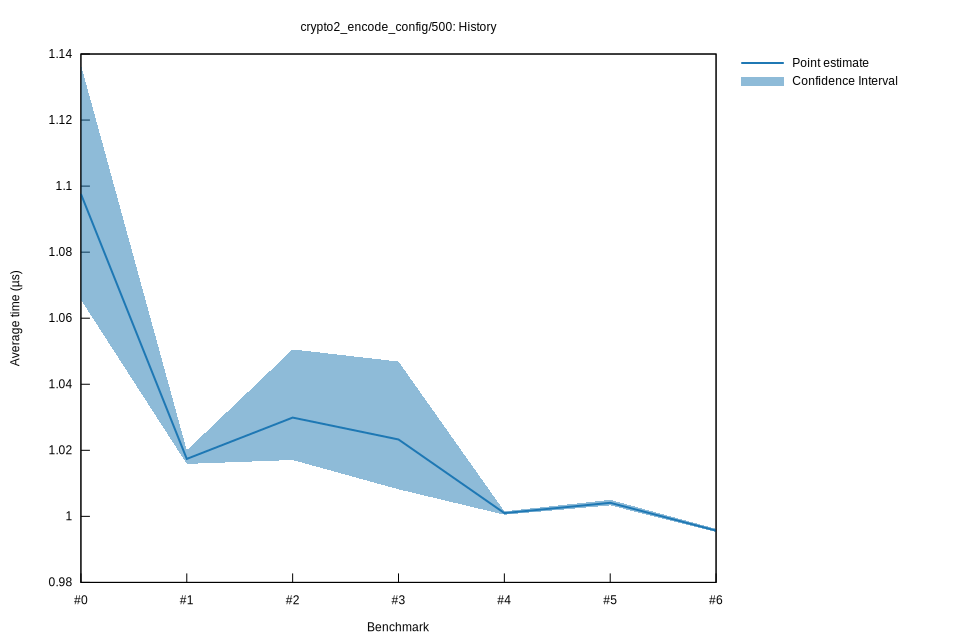

# 62022-10-16T19:54:04+03:00
|
Lower Bound |
Estimate |
Upper Bound |
| Value: |
1.00µs |
1.00µs |
1.00µs |
| Throughput: |
480.08MiB/s |
479.86MiB/s |
479.60MiB/s |
| Change in Value: |
-1.1017% |
-0.8860% |
-0.6269% |
| Change in Throughput: |
+1.1140% |
+0.8939% |
+0.6308% |
No change in performance detected.
# 52022-10-16T17:16:02+03:00
|
Lower Bound |
Estimate |
Upper Bound |
| Value: |
1.00µs |
1.00µs |
1.00µs |
| Throughput: |
476.21MiB/s |
475.84MiB/s |
475.42MiB/s |
| Change in Value: |
+0.4154% |
+0.5429% |
+0.6938% |
| Change in Throughput: |
-0.4137% |
-0.5399% |
-0.6890% |
No change in performance detected.
# 42022-10-15T17:10:46+03:00
|
Lower Bound |
Estimate |
Upper Bound |
| Value: |
1.00µs |
1.00µs |
1.00µs |
| Throughput: |
477.55MiB/s |
477.32MiB/s |
477.06MiB/s |
| Change in Value: |
-2.4958% |
-1.5671% |
-0.9049% |
| Change in Throughput: |
+2.5596% |
+1.5921% |
+0.9132% |
No change in performance detected.
# 32022-10-15T17:07:16+03:00
|
Lower Bound |
Estimate |
Upper Bound |
| Value: |
1.01µs |
1.02µs |
1.05µs |
| Throughput: |
473.91MiB/s |
466.92MiB/s |
456.40MiB/s |
| Change in Value: |
-9.6253% |
-6.7617% |
-4.0485% |
| Change in Throughput: |
+10.650% |
+7.2521% |
+4.2193% |
No change in performance detected.
# 22022-10-15T16:46:26+03:00
|
Lower Bound |
Estimate |
Upper Bound |
| Value: |
1.02µs |
1.03µs |
1.05µs |
| Throughput: |
469.78MiB/s |
463.92MiB/s |
454.80MiB/s |
| Change in Value: |
+2.6266% |
+5.8076% |
+9.3642% |
| Change in Throughput: |
-2.5594% |
-5.4888% |
-8.5624% |
No change in performance detected.
# 12022-10-08T17:24:31+03:00
|
Lower Bound |
Estimate |
Upper Bound |
| Value: |
1.02µs |
1.02µs |
1.02µs |
| Throughput: |
470.32MiB/s |
469.62MiB/s |
468.43MiB/s |
| Change in Value: |
-6.1316% |
-3.9170% |
-1.7993% |
| Change in Throughput: |
+6.5321% |
+4.0767% |
+1.8323% |
No change in performance detected.
# 02022-10-08T17:05:36+03:00
|
Lower Bound |
Estimate |
Upper Bound |
| Value: |
1.07µs |
1.10µs |
1.14µs |
| Throughput: |
448.38MiB/s |
435.29MiB/s |
420.33MiB/s |